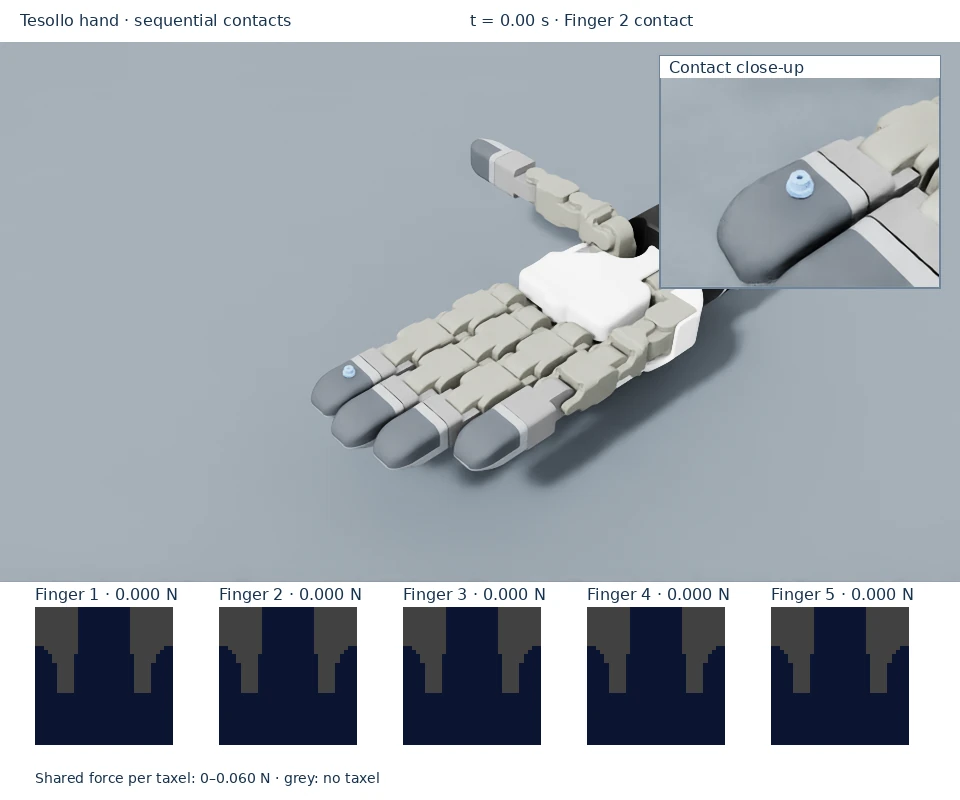

Sequential fingertip contact
A gear is placed above each of the Tesollo hand’s fingers 2–5 in turn and falls into contact. Compare the loaded fingertip’s tactile frame with the unloaded frames. The thumb is outside this sequence.



Run the example
From the repository root in the installed environment:
python scripts/dex01_on_tesollo_dg5f.py
The sequence repeats until closed. The gear is repositioned above each finger; the hand holds its pose. For contact driven by finger motion, run stationary-object pressing.
Read the tactile output
The viewport shows five tactile frames and each finger’s total normal load in newtons. Contact moves across frames 2, 3, 4, and 5 as the gear advances; the other frames remain unloaded. The video inset shows which fingertip is supporting the gear.
Each frame unwraps a curved fingertip onto a 32 × 32 image with 740 sensing sites. Match the active patch to the contact location rather than expecting an optical outline of the gear. See display colors and units.
The gear can rock, so use the flat-load fixture and optional thumb probe for quantitative force checks and thumb coverage.